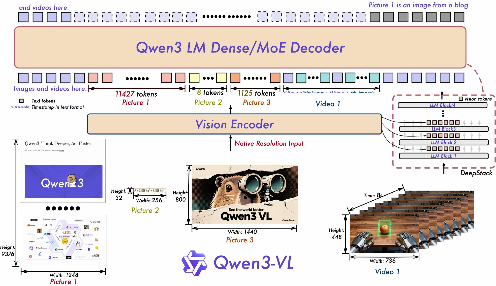
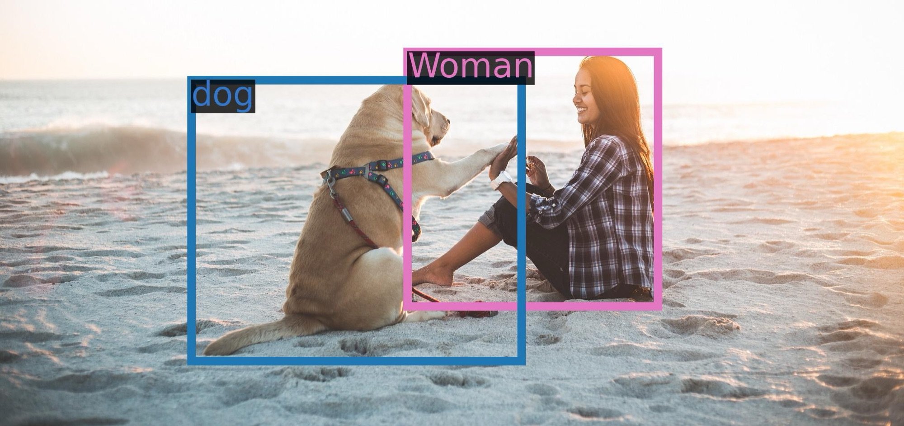
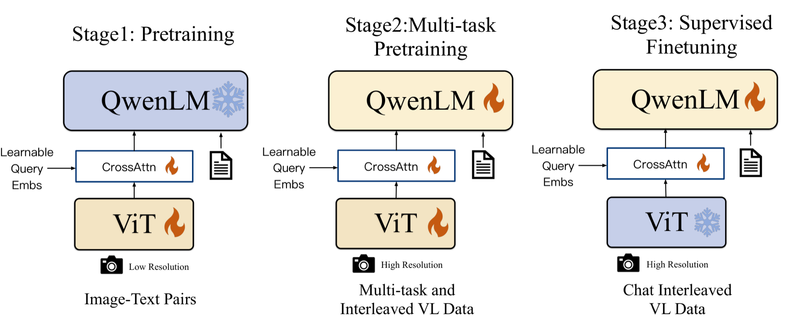
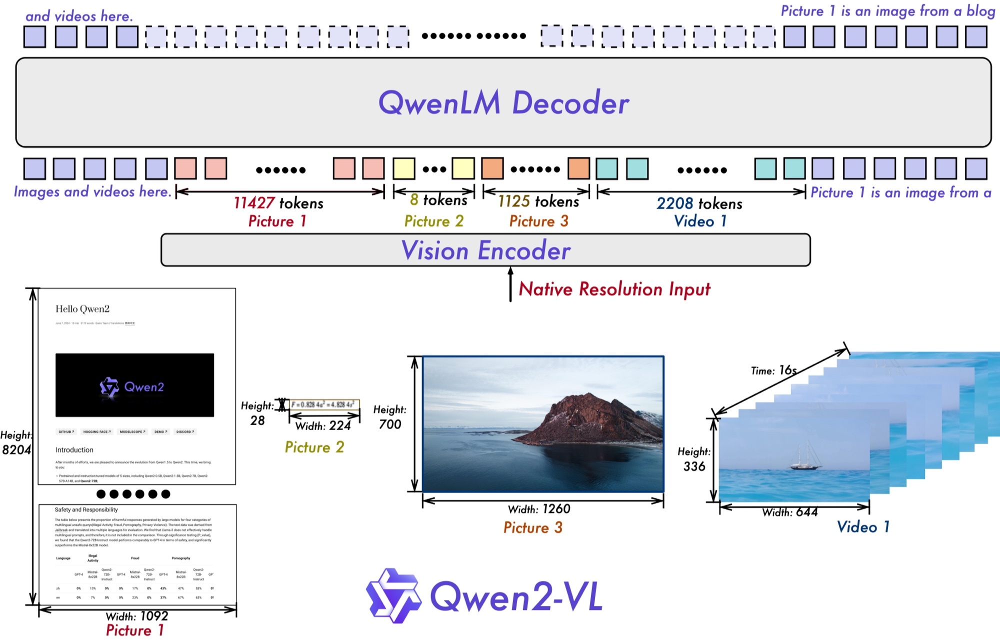
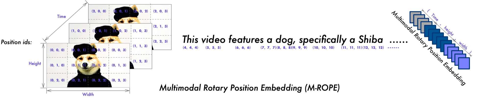
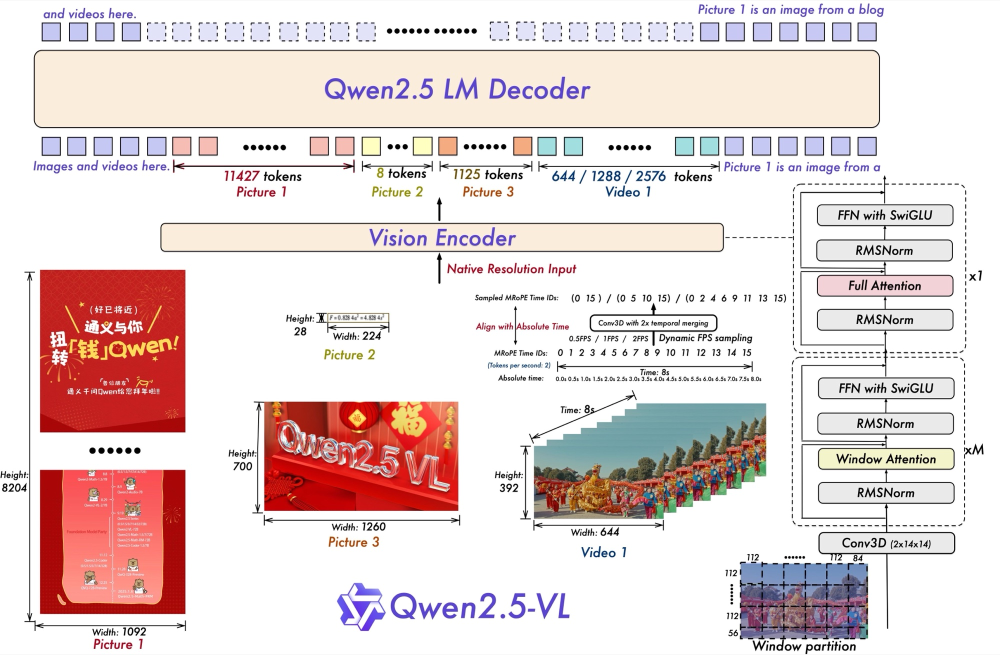
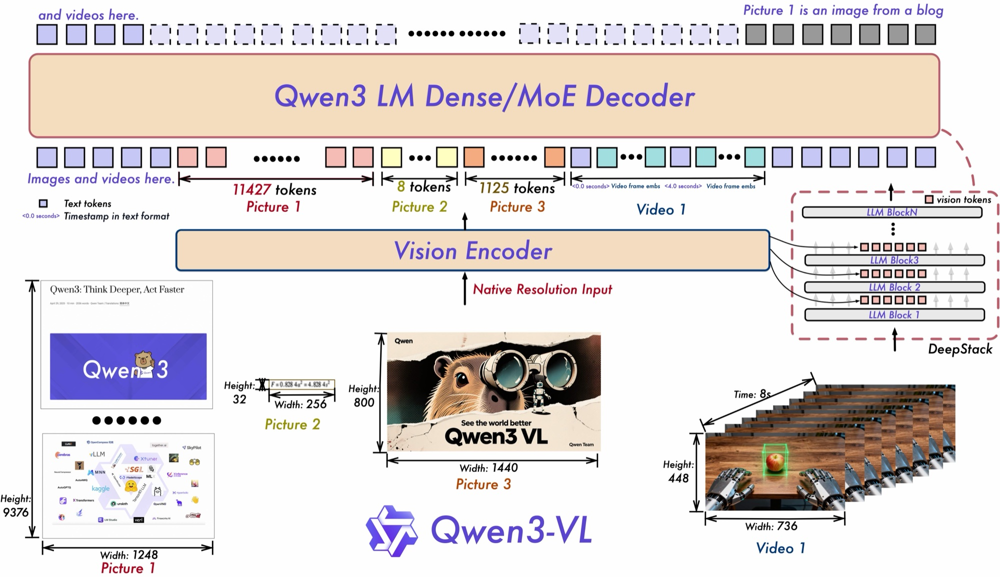
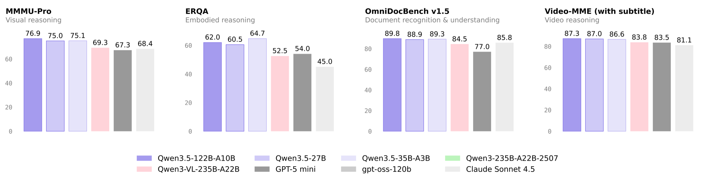

Qwen-VL 的发展路线：从 448 像素到原生多模态

从 2023 年 8 月的 Qwen-VL 到 2026 年 2 月的 Qwen3.5，通义千问的视觉语言模型（VLM）已经迭代了五代。前四代均以「-VL」作为独立支线发布；到了 Qwen3.5，视觉能力被直接并入主线模型，标志着通义千问全面转向原生多模态。
本文按时间顺序梳理这五代模型的核心演进，重点回答四个问题：图像如何转化为视觉 token？空间位置与时间如何编码？视觉特征与语言模型如何融合？模型的能力边界扩展到了哪里？

五代模型一览
| 代际 | 主要尺寸 | 视觉编码器 | 视觉 token | 位置编码 |
|---|---|---|---|---|
| Qwen-VL | 9.6B | ViT-bigG（1.9B） | 每张图固定 256 个 | 1D RoPE |
| Qwen2-VL | 2B / 7B / 72B | ViT（约 675M） | 每 28×28 像素 1 个 | M-RoPE |
| Qwen2.5-VL | 3B / 7B / 32B / 72B | ViT + 窗口注意力 | 每 28×28 像素 1 个 | M-RoPE + 绝对时间 |
| Qwen3-VL | 2B～32B，MoE 最大 235B | SigLIP-2 | 每 32×32 像素 1 个 | 交错 MRoPE + 文本时间戳 |
| Qwen3.5 | 0.8B～27B，MoE 最大 397B | 同 Qwen3-VL | 每 32×32 像素 1 个 | 交错 MRoPE |
1. Qwen-VL（2023.08）：固定分辨率与查询向量压缩
初代 Qwen-VL 采用了当时主流的「视觉编码器 + 适配器 + 语言模型」三段式架构：视觉端以 OpenCLIP 的 ViT-bigG（1.9B）初始化，语言端基于 Qwen-7B（7.7B），中间通过一层交叉注意力适配器（Position-Aware Vision-Language Adapter，0.08B）桥接，总参数量约 9.6B。
输入图像被统一缩放到 ，按 切分为 1024 个 patch。如果将 1024 个视觉特征直接拼入语言模型，序列开销过大；因此适配器引入 256 个可学习的查询向量 作为瓶颈层，通过交叉注意力将视觉特征固定压缩为 256 个 token：
其中 为可学习查询向量， 为 ViT 输出的图像特征，、 为二维绝对位置编码。为了弥补特征压缩带来的空间信息损失，作者特意在注意力计算的查询和键中显式注入了二维位置编码。
在视觉定位（Grounding）上，Qwen-VL 采用了「将坐标词表化为普通文本」的策略：先将边界框坐标按图像宽高归一化至 的整数，
再格式化为 (x1,y1),(x2,y2) 字符串并用 <box></box> 标记包裹；被框选的对象描述用 <ref></ref> 标出，图像特征序列则用 <img></img> 定界。这种设计无需扩充位置专用词表，语言模型直接以自回归方式输出坐标文本。

Qwen-VL 的定位示例。图源：Qwen-VL 模型卡
训练分为三个阶段：第一阶段在 分辨率下使用 14 亿图文对（清洗自 50 亿原始数据，英文占 77.3%、中文占 22.7%）做预训练，此时冻结 LLM，仅更新 ViT 与适配器；第二阶段将分辨率提升至 ，解冻全部参数进行多任务图文交错预训练；第三阶段冻结 ViT，通过指令微调得到对话模型 Qwen-VL-Chat。

Qwen-VL 的三阶段训练，雪花表示冻结，火焰表示参与训练。图源：Qwen-VL 论文图 3
这一代架构的局限也十分明显：将一页 A4 文档或长网页强行缩放到 会导致密集小字模糊不可辨；同时，每张图固定分配 256 个 token，既无法承载高信息量的大图，又在简单小图上造成了算力浪费。
2. Qwen2-VL（2024.08）：原生动态分辨率与 M-RoPE
Qwen2-VL 的核心目标正是打破固定分辨率的限制。2B 与 7B 版本于 2024 年 8 月 30 日开源，72B 版本与技术报告于 9 月 19 日发布。三个尺寸共享同一个约 675M 参数的 ViT（由 DFN 初始化），语言基座升级为 Qwen2。
2.1 原生动态分辨率（Naive Dynamic Resolution）
借鉴 NaViT 的思路，Qwen2-VL 不再将图像缩放到固定尺寸，而是直接按原始分辨率与长宽比切分 patch。为此，ViT 移除了固定网格的绝对位置编码，改用二维旋转位置编码（2D-RoPE）以适应任意尺寸。ViT 输出特征后，通过一个两层 MLP 将空间上相邻的 个 patch（每个 patch 为 像素）合并为 1 个视觉 token。因此，每个视觉 token 严格对应原图中 像素的区域：
（输入前先将 、 对齐到 28 的整数倍。）例如，一张 的小图仅生成 64 个视觉 token，加上起止标记 <|vision_start|> 与 <|vision_end|> 共 66 个；而一张 的超长文档则会生成 个 token。在下图的官方架构示例中，同一个视觉编码器原生处理超长网页截图、 的公式小图、 的风景照以及 16 秒视频，分别生成 11427、8、1125 和 2208 个 token：

Qwen2-VL 的整体结构。图源：Qwen2-VL 模型卡
默认配置下，单张图像的 token 数控制在 4～16384 之间，工程上可通过 min_pixels 和 max_pixels 灵活权衡显存占用与识别精度：
from transformers import AutoProcessor
# 一个视觉 token 对应 28×28 像素
# 下面把每张图限制在 256～1280 个 token
processor = AutoProcessor.from_pretrained(
"Qwen/Qwen2-VL-7B-Instruct",
min_pixels=256 * 28 * 28,
max_pixels=1280 * 28 * 28,
)
论文的消融实验清晰验证了动态分辨率的优势：动态输入下平均每张图仅消耗 1924 个 token，在 OCRBench 上却拿到 866 分，不仅远超相近开销的固定分辨率方案，甚至显著高于固定 3136 个 token 的 786 分。
| 视觉 token | 平均 token 数 | InfoVQA | OCRBench |
|---|---|---|---|
| 固定 | 64 | 28.85 | 572 |
| 固定 | 576 | 65.72 | 828 |
| 固定 | 1600 | 74.99 | 824 |
| 固定 | 3136 | 77.27 | 786 |
| 动态 | 1924 | 75.89 | 866 |
2.2 多模态旋转位置编码（M-RoPE）
标准的一维 RoPE 仅编码序列下标 ，第 组频率分量的旋转角为：
其中下标 越小，旋转频率越高。为了在语言模型中同时表达时间与二维空间拓扑，Qwen2-VL 提出了 M-RoPE（Multimodal RoPE）：为每个 token 赋予时间、高度、宽度三元位置编号 ，并将注意力头的 组频率分量划分为三段，分别绑定三个坐标轴：
三元编号的构造规则如下：
- 纯文本：三个分量取相同值（），在数学上完全退化为一维 RoPE；
- 单张图像：时间维 保持恒定，、 沿 patch 的行、列下标递增；
- 视频：每经过一个时间块 递增 1，帧内 、 与图像一致；
- 多模态交错序列：下一段模态的起始编号等于前一段三个分量的最大值加 1。
在下图的官方示例中，输入包含 3 个时间帧、每帧 个视觉 token，紧随其后的文本便从 开始继续递增。由于图像与视频的位置编号仅按帧数与行列数增长，远小于拉平后的 token 总数，模型在长序列推理时具备更好的长度外推能力。

M-RoPE 给视频和文本分配的位置编号。图源：Qwen2-VL 模型卡
以 Qwen2-VL-7B 为例，配置项 mrope_section = [16, 24, 24]（head_dim = 128，共 64 组频率）表示按连续分块方式将频率切分给三个坐标轴：
消融实验表明，将 1D-RoPE 替换为 M-RoPE 后，数学视觉推理基准 MathVista 从 39.2 提升至 43.4，视频问答基准 NextQA 从 43.9 提升至 46.0。
2.3 图像与视频的统一建模
在视频处理上，Qwen2-VL 默认以 2 fps 采样，并在 ViT 输入端采用深度为 2 的 3D 卷积将相邻两帧融合为一个时间块，使视频序列长度减半；为了保持输入形式统一，单张静态图像在底层被视作两帧完全相同的画面。单段视频最多分配 16384 个视觉 token。凭借动态分辨率与 M-RoPE，Qwen2-VL 能够理解 20 分钟以上的长视频，支持多语言复杂 OCR，并初步具备了操作手机与机器人的视觉智能体能力。
3. Qwen2.5-VL（2025.01）：窗口注意力 ViT、绝对时间对齐与视觉智能体
Qwen2.5-VL 于 2025 年 1 月 28 日发布 3B、7B、72B 版本，2 月 20 日公开技术报告，并于 3 月 25 日补充了兼顾性能与部署成本的 32B 版本。
下图展示了 Qwen2.5-VL 的整体架构：右侧是引入窗口注意力与 SwiGLU 的新版 ViT，中间则是动态帧率采样与对齐到真实物理时间的 MRoPE 时间编码。

Qwen2.5-VL 的整体结构。图源：Qwen2.5-VL 模型卡
3.1 引入窗口注意力的原生 ViT
原生高分辨率输入虽然提升了细节感知，却让 ViT 成了计算瓶颈：自注意力的复杂度随 patch 数量 呈二次方增长。为此，Qwen2.5-VL 从头训练了一个 32 层的原生动态分辨率 ViT——仅在 4 个跨步层（下标 7、15、23、31，即每 8 层的最后一层）保留全局注意力，其余 28 层全部改为在 像素（即 个 patch）的局部窗口内计算注意力：
以一张 的高清图像为例，patch 总数 ，窗口注意力层的计算量仅为全局注意力层的 ，使视觉编码复杂度近似退化为与像素数线性相关。同时，ViT 内部引入了 RMSNorm 与 SwiGLU 激活函数，在算子结构上与 Qwen2.5 语言模型完全对齐。
3.2 MRoPE 时间维对齐绝对物理时间
在 Qwen2-VL 中，视频的时间位置编号仅代表帧组的顺序下标（）。这会带来一个尺度歧义：同样相差 ，在 1 fps 与 4 fps 采样下对应的真实物理时长相差四倍，模型无法仅凭位置编码感知动作的真实快慢与具体时刻。Qwen2.5-VL 引入了动态帧率（Dynamic FPS）训练，并将时间位置编号直接与视频的真实时间戳绑定：
其中 为第 个帧组在原视频中的真实时刻（秒）。这样，位置编号的差值直接对应真实流逝的物理时间，模型无需依赖额外提示即可感知视频速率，进而支持数小时长视频的理解与秒级事件定位（Temporal Grounding）。
3.3 绝对坐标、全能文档解析与 GUI 智能体
- 绝对像素坐标：摒弃了前两代的 归一化坐标，改为直接输出基于原图真实像素尺寸的绝对坐标。在原生分辨率输入下，绝对坐标能让模型直接感知目标在图像中的真实尺度。
- 结构化文档解析（QwenVL HTML）：将长文档中的标题、段落、表格、图表、数学公式、乐谱乃至化学分子式统一解析为包含布局框坐标的 HTML 结构。
- 预训练规模扩展：预训练语料从 Qwen2-VL 的 1.2 万亿 token 大幅扩充至约 4.1 万亿 token。
- 计算机与手机操控：强化了屏幕图标理解与功能定位，可作为 GUI Agent 在电脑桌面与手机界面上完成多步交互任务。
4. Qwen3-VL（2025.09）：多层视觉注入（DeepStack）与 256K 长上下文
Qwen3-VL 首次同步提供稠密（Dense）与混合专家（MoE）两类架构：旗舰版 235B-A22B 于 2025 年 9 月 23 日发布，随后陆续开源 30B-A3B、4B、8B、2B、32B，每个尺寸均提供 Instruct 与长思维链 Thinking 两个权重，技术报告于 11 月公布。语言基座升级为 Qwen3，全阶段原生支持 256K 上下文，并可外推至 1M。
下图为 Qwen3-VL 的官方架构图：右侧虚线框展示了将 ViT 多层特征注入语言模型的 DeepStack 机制，视频流中则显式插入了 <0.0 seconds> 等文本格式的时间戳。

Qwen3-VL 的整体结构。图源：Qwen3-VL 模型卡
4.1 视觉编码器切换至 SigLIP-2
视觉编码器更换为 SigLIP-2（主线尺寸使用 SO-400M；轻量级 2B、4B 采用 300M 的 Large 版本），在官方预训练权重基础上继续做动态分辨率适应训练。由于 patch 大小从 调整为 ，经 MLP 合并后，每个视觉 token 对应的原图区域变为 像素：
相比 的切分，同样分辨率下的视觉 token 数量进一步减少了约 23%。
4.2 交错式多模态位置编码（Interleaved MRoPE）
Qwen3-VL 技术报告指出，前两代将旋转频率按连续分块（Chunked）分配给 会造成频谱失衡：以 Qwen2-VL 为例，时间轴 仅分到最前面的 16 组高频分量，完全缺失低频分量，导致长视频中跨度较大的远距离时间依赖难以被有效建模。Qwen3-VL 改为在频率维度上对 进行交错排列，使三个坐标轴都能均匀覆盖从高频到低频的完整频谱：
在 Qwen3-VL-8B 的配置文件中，这一策略体现为 mrope_section = [24, 20, 20] 且开启 mrope_interleaved: true。
4.3 DeepStack：跨层多粒度视觉特征注入
前几代模型仅将 ViT 最后一层的输出送入语言模型，底层的高频细节（如边缘、小字笔画）在深层网络中容易被平滑掉。Qwen3-VL 借鉴 DeepStack，从 ViT 的三个中间层额外提取特征，分别经由独立的 Merger 投影后，按残差相加的方式直接注入语言模型前 3 层对应视觉 token 的隐藏状态中：
其中 表示序列中视觉 token 的下标集合， 为 ViT 下标为 的层的输出特征；在 Qwen3-VL-8B 中取 。由于采用逐位置相加而非序列拼接，DeepStack 不增加任何额外的上下文长度，却能让语言模型同时获得 ViT 浅层的精细空间特征与深层的全局语义特征。
4.4 显式文本时间戳（Text-based Timestamps）
Qwen2.5-VL 将 MRoPE 时间编号对齐到绝对物理时间后，在工程上暴露出两个痛点：一是数小时长视频中时间位置 ID 会变得极大且高度稀疏，影响外推稳定性；二是训练时为了覆盖各种采样率，数据构造管线较为繁琐。Qwen3-VL 采取了一个更直接的做法：在每个视频帧组前直接拼入 <3.0 seconds> 形式的纯文本时间戳，并在训练时混合使用「秒数」与 HH:MM:SS 两种格式。虽然略微增加了少量文本 token，却彻底解耦了时间感知与位置 ID 尺度，显著提升了长视频秒级定位与密集事件描述的准确度。
4.5 四阶段渐进式长上下文预训练
Qwen3-VL 的预训练分为四个阶段，上下文窗口从 8K 一路拉长至 256K，累计训练超过 2 万亿 token：
| 阶段 | 目标 | 训练的参数 | token 数 | 序列长度 |
|---|---|---|---|---|
| S0 | 视觉语言对齐 | 只训 Merger | 67B | 8,192 |
| S1 | 多模态预训练 | 全部 | 约 1T | 8,192 |
| S2 | 长上下文预训练 | 全部 | 约 1T | 32,768 |
| S3 | 超长上下文适配 | 全部 | 100B | 262,144 |
训练目标上，损失函数改为按样本有效 token 数的平方根进行归一化（Square-root Normalized Per-token Loss），以平衡短图文对与长文本、长视频对梯度的贡献。技术报告显示，Qwen3-VL 在保留顶尖多模态理解的同时，纯文本能力未发生退化，部分指标甚至反超同尺寸纯文本基座。能力层面，2D 定位重新回归 相对坐标以解耦分辨率变化，新增 3D 边界框定位与空间推理，并支持看图生成 Draw.io 流程图与前端 HTML/CSS/JS 代码。
5. Qwen3.5（2026.02）：告别独立「-VL」，走向早期融合的原生多模态
2026 年 2 月 16 日发布的 Qwen3.5 完成了产品线形态的合流：主线模型本身就是视觉语言模型。官方通过在数万亿文本与多模态 token 上进行早期融合（Early Fusion）预训练，使主线模型在同等激活规模下全面超越了专门的 Qwen3-VL；Hugging Face 上也不再单列独立的 Qwen3.5-VL 分支。首发型号为稀疏 MoE 旗舰 397B-A17B，随后于 2 月 24 日开源中型主力 122B-A10B、35B-A3B 与稠密 27B，3 月 2 日发布端侧轻量系列 9B、4B、2B 与 0.8B。
对比公开的 Qwen3.5-27B 配置文件，可以观察到几项关键的架构演进：
- 视觉桥接进一步化繁为简：视觉编码器依然保留，规格与 Qwen3-VL 一致（27 层、1152 维、patch 16），但配置中的
deepstack_visual_indexes已置空（[]），移除了 DeepStack 跨层注入结构。当文本与视觉从预训练早期便深度协同更新时，简单的单层投影已足以完成高质量跨模态对齐。 - Gated DeltaNet + 全局注意力混合基座：语言端沿用 Qwen3-Next 的高效混合架构，在 64 层网络中按 的比例交替堆叠 Gated DeltaNet（线性注意力）与门控全局注意力（Gated Attention），并内置多 token 预测（MTP）；397B-A17B 等 MoE 型号则采用高稀疏度专家路由。
- 交错 MRoPE 与 256K 原生窗口：继续保留交错式 MRoPE（
mrope_section = [11, 11, 10]，partial_rotary_factor = 0.25，仅对四分之一的注意力头维度施加旋转编码），原生上下文窗口保持 262,144 个 token。 - 词表与多语言扩展：词表规模从约 15 万扩充至 25 万（
vocab_size = 248320），支持的语言与方言从 119 种增加至 201 种，显著提高了多语种文本与代码的编码效率。
在底层训练基础设施上，官方引入了视觉编码器与语言基座解耦的异步并行策略，使图文视频混合预训练的吞吐率逼近纯文本训练。

Qwen3.5 中等尺寸模型与 Qwen3-VL-235B-A22B 等模型的对比，节选视觉部分。图源：Qwen3.5-27B 模型卡
得益于早期融合与混合架构，仅 27B 参数的稠密模型 Qwen3.5-27B 在多项核心视觉基准上已经超越了上一代 235B 的 MoE 旗舰 Qwen3-VL-235B-A22B：如上图所示，MMMU-Pro 从 69.3 提升至 75.0，文档全要素解析 OmniDocBench v1.5 从 84.5 提升至 88.9；模型卡完整评测表中，MathVision 也从 74.6 大幅跃升至 86.0。
后续版本继续沿着这一方向演进：2026 年 8 月发布的 Qwen3.8-Max 原生支持文本、图像与视频联合输入（参见 Roboflow 的评测）；9 月公开的 Qwen3.8-Omni 则进一步将语音、环境音与空间音频统一编入同一个自回归 token 序列中。
6. 总结：四条核心演进主线
回看 Qwen-VL 系列三年间的五次迭代，可以清晰地提炼出四条演进主线：
- 视觉分辨率与 Token 化：从固定 缩放 → 原生动态分辨率（每 像素合并为 1 个 token）→ 引入局部窗口注意力将 ViT 计算复杂度降至近似线性 → 切换至 SigLIP-2（每 像素 1 个 token），在保留细节的同时持续压缩单图 token 数。
- 位置与时间编码：从纯文本一维 RoPE → M-RoPE 的 三轴分块旋转编码 → 时间维与真实物理时间对齐以支持动态帧率 → 频谱均匀分布的交错式 MRoPE 配合显式文本时间戳，彻底打通超长视频的时序感知。
- 跨模态连接与融合：从带 256 个查询向量的交叉注意力重度压缩 → 轻量级 MLP 相邻合并 → Qwen3-VL 引入 DeepStack 进行多层视觉特征注入 → Qwen3.5 依靠万亿级早期融合预训练直接移除 DeepStack，跨模态适配器越做越薄。
- 任务与能力边界：从基础看图说话、视觉问答与框定位 → 20 分钟以上长视频理解与多语言 OCR → 结构化 HTML 文档解析与电脑/手机 GUI 智能体 → 256K 超长上下文、视觉前端编程、3D 空间推理，最终合流为统一的原生多模态智能体。
纵观整条路线，最值得注意的趋势是连接视觉与语言的模块正在不断做减法：从早期的 Q-Former 式交叉注意力，简化为两层 MLP；即便是 Qwen3-VL 中精心设计的 DeepStack，也在 Qwen3.5 中被更彻底的「早期融合预训练」所替代。视觉不再是后天挂载到语言模型上的外接插件，而是大模型从预训练第一天起就具备的原生感官。
参考资料
- Bai et al. Qwen-VL: A Versatile Vision-Language Model for Understanding, Localization, Text Reading, and Beyond. arXiv:2308.12966, 2023.
- Wang et al. Qwen2-VL: Enhancing Vision-Language Model's Perception of the World at Any Resolution. arXiv:2409.12191, 2024.
- Qwen Team. Qwen2-VL: To See the World More Clearly. 2024.
- Bai et al. Qwen2.5-VL Technical Report. arXiv:2502.13923, 2025.
- Qwen Team. Qwen3-VL Technical Report. arXiv:2511.21631, 2025.
- QwenLM/Qwen3-VL：Qwen2-VL 到 Qwen3-VL 各版本的发布时间。
- Qwen Team. Qwen3.5: Towards Native Multimodal Agents. 2026.
- Hugging Face 上的模型配置：Qwen2-VL-7B-Instruct、Qwen3-VL-8B-Instruct、Qwen3.5-27B。
- Dehghani et al. Patch n' Pack: NaViT, a Vision Transformer for any Aspect Ratio and Resolution. 2023.
- Su et al. RoFormer: Enhanced Transformer with Rotary Position Embedding. 2021.
- Meng et al. DeepStack: Deeply Stacking Visual Tokens is Surprisingly Simple and Effective for LMMs. NeurIPS 2024.
- Tschannen et al. SigLIP 2: Multilingual Vision-Language Encoders with Improved Semantic Understanding, Localization, and Dense Features. 2025.
- Qwen Team. Qwen3.8-Omni: Towards Native Omni-Modal Agents. 2026.
- Roboflow. Qwen3.8-Max for Vision: Benchmarks, Strengths, and Real-World Tests. 2026.